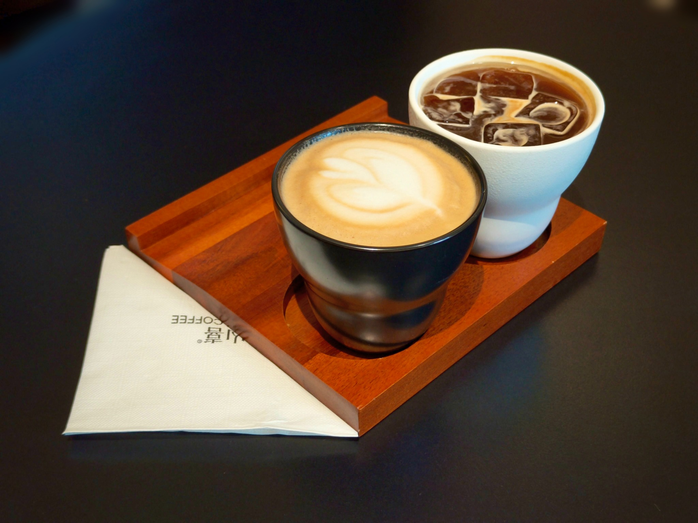
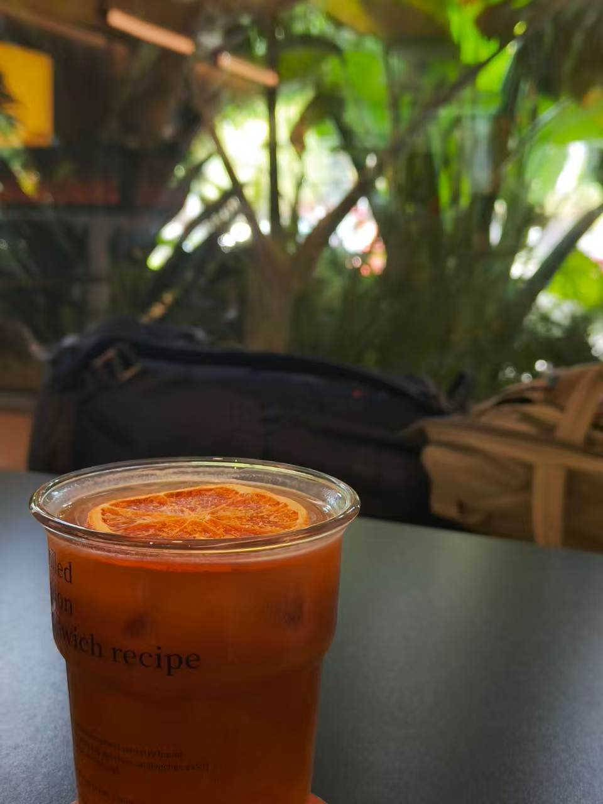

客人的一束光
有人坐在靠窗的位置，看见阳光落在桌面、百叶窗和绿植上。照片从客人的视角寄回来，店也因此被重新看见。
CHUXIONG · YUNNAN

MOUNTAIN / JOY / COFFEE
“山喜”这个名字由主理人的妈妈起下。山，是咖啡生长的地方；喜，是人对一件事真实而长久的喜欢。于是，山喜成为了把咖啡种进山里的想象。
这里没有把自然当成装饰。叶片、木头、光线和咖啡共同生长，像把山林的一小段带回城市，让人进门以后慢下来。

LETTERS FROM THE SHOP
那些送来的不只是照片，
而是一封封写给这间小店的书信。
发现美，是一种温柔的能力。真正让一间店活起来的，也不是一次精心陈列，而是人与人之间持续发生的来往。
有人坐在靠窗的位置，看见阳光落在桌面、百叶窗和绿植上。照片从客人的视角寄回来，店也因此被重新看见。
有人来工作，有人来发呆，也有人只是喝完一杯再离开。那些普通到不会被特别记录的时刻，慢慢组成了山喜。
一张照片、一句留言、一次打招呼，都是店与人之间的往返。它们记录的不是摆拍，而是真实生活曾经在这里发生。

A CUP IN THE MAKING
温度落进冰块，香气跟着液面慢慢展开。山喜珍惜的不是某个被摆好的结果，而是手、时间与材料真正相遇的这一刻。
FROM THE BAR
完整菜单负责选择，代表饮品负责让人记住。这里不罗列所有品类，只留下风味、质地和故事最鲜明的几杯。
 01
01CITRUS · COCONUT · COFFEE
新鲜橙意、椰香与可可在杯中相遇。酸甜、醇厚与流沙般的层次，被放进同一杯里。

02ONE BEAN · TWO EXPRESSIONS
同一款咖啡豆，用两种温度与口感呈现。不是二选一，而是在一份里慢慢比较。

03ORANGE C · AMERICANO
清亮的柑橘感与意式浓缩相叠，明快、干净，像一杯可以喝下去的早晨阳光。
 04
04CEDAR · ROSE · SIGNATURE
从雪松香气获得灵感的特调。木质气息、轻柔玫瑰与绵密泡沫，让味道也拥有空间感。
A DAY AT SHANXI
店里的专业，不是一开始就会。它来自称豆、磨豆、观察流速、记住时间，也来自出错以后再做一遍。手上的稳定，是一天一天练出来的。
但专业不等于时刻紧绷。吧台后会有互相提醒，也会有玩笑和合照。山喜的安静不是沉默，而是一种可以认真工作，也可以安心做自己的松弛。


不懂就学，不稳就再来一次。专业首先是一种诚实。
高峰期彼此补位，忙完以后也给同伴留一点喘息。
不把所有人塑造成同一种样子，店才会真正像人一样活着。
COME AND STAY A WHILE
杯有欢喜，心有山喜。
靠窗的位置有光，也有一段可以慢下来的时间。喝咖啡、看书、工作或只是发一会儿呆，都不需要解释。
云南省楚雄市鹿城镇
枫桥水郡北苑商铺 B6、B7
每日 10:30—22:30